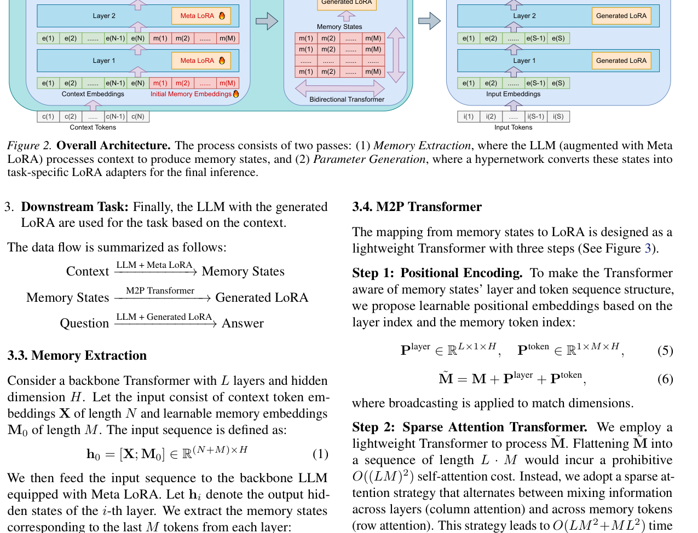
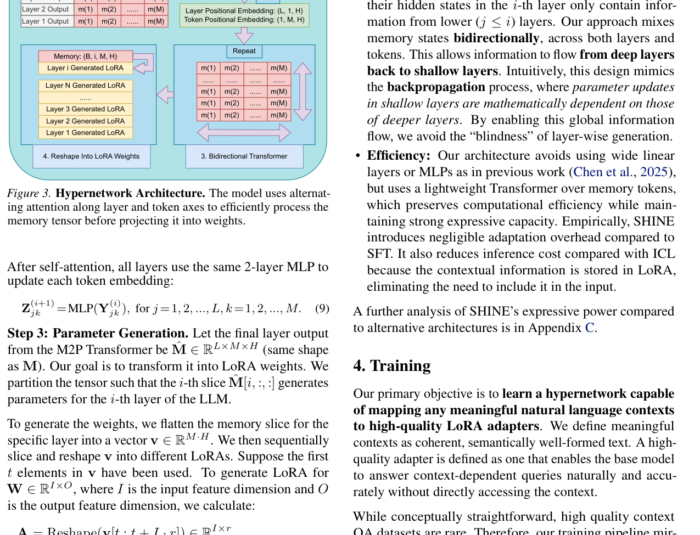
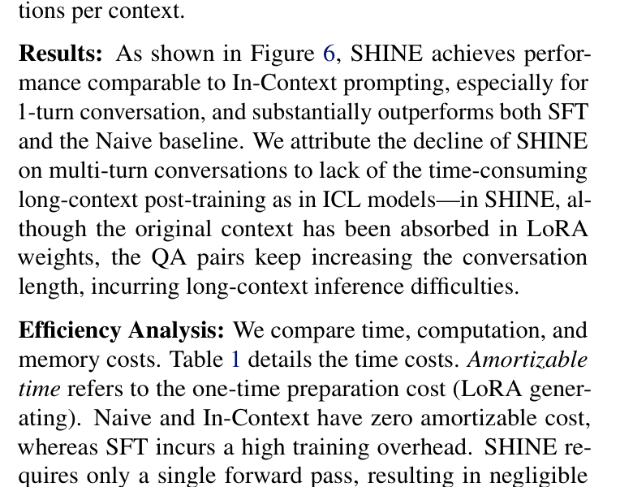

context 到参数的第三条路
让 LLM 掌握新信息，传统上只有两条路。第一条是 prompt engineering / in-context learning (ICL)：把信息塞进上下文窗口，靠注意力在推理时检索。第二条是 fine-tuning：用梯度下降把信息写进模型参数，推理时不再需要原文。
两条路各有致命伤。ICL 的问题是上下文窗口是稀缺资源——每多一段 context，推理延迟和 KV cache 内存就线性增长；而且 context rot（上下文腐烂）已被反复证实：即使检索完美，过长的上下文本身就会拉低模型表现。Fine-tuning 的问题是训练开销巨大——每个任务、每段文档都要跑几十上百步梯度下降，超参数敏感，还要为每个任务存一份独立参数。
SHINE 走的是第三条路：用一个 hypernetwork（超网络）在单次前向传播中把 context 直接映射成 LoRA 适配器权重。生成的 LoRA 可以像普通微调 LoRA 一样挂在冻结 LLM 上回答问题，不再需要访问原始 context。这意味着：
- 没有训练开销：一次前向 = 一个 LoRA，0.3 秒完成，对比 SFT 的数十秒到数分钟。
- 不占上下文窗口：context 被"压缩"进 LoRA 参数，推理时输入只有问题，生成速度和裸模型一样快。
- 即时切换任务：换一段 context = 换一个 LoRA，无需重新训练。
核心洞察 · in-parameter knowledge
SHINE 把这个过程称为 "transforming in-context knowledge to in-parameter knowledge in one pass"。这不是简单的记忆压缩——论文在 multi-hop QA 上的表现证明，生成的 LoRA 不仅存储了 context 的字面信息，还捕获了其中的语义结构和推理关系，使得模型可以在参数化的 context 上进行多跳推理。

hypernetwork 生成 LoRA 的三大挑战
用 hypernetwork 生成 LLM 的 LoRA 听起来直接，但论文在 §3.1 明确指出了三个根本性挑战，之前的方法都没能同时解决。
挑战一：Semantic-to-Parameter Alignment（语义到参数的对齐）
hypernetwork 的输入是自然语言文本，输出是权重空间中的数值矩阵。这两个空间之间存在巨大的表征鸿沟。hypernetwork 需要具备极强的语言理解能力，才能把复杂的文本输入翻译成适配器权重中的精确功能调整。
之前的方法要么训练一个小型外部编码器从零学起（表达力不足），要么只用 LLM 最后一层的隐藏态（信息瓶颈）。SHINE 的选择是直接复用冻结 LLM 自身做编码器——继承预训练好的语言理解能力，而且从所有层提取表征，覆盖从低层句法到高层推理的全频谱语义信息。
挑战二：High-Dimensional Output（高维输出）
即使 LoRA 是低秩的，要为 LLM 的所有层、所有线性层生成 LoRA 权重，输出维度仍然非常高。以 Qwen3-8B 为例，每层有多个注意力投影和 MLP 线性层，r=8 时单层 LoRA 参数就有数万个，全层加起来是数十万维的输出空间。
之前的方法（Charakorn et al., 2025; Xiao et al., 2023 等）的典型做法是用一个小 MLP 分段独立生成权重片段，然后拼接。论文尖锐地指出：这种 "segment-wise" 生成把权重当成孤立的片段处理，无法捕捉全局依赖和潜在的结构相关性，而这些对于连贯的权重适配至关重要。结果就是生成的适配器缺乏全局协调，在复杂任务上表现次优。
挑战三：Efficiency（效率）
要成为 fine-tuning 的可行替代，hypernetwork 必须以极低的延迟和计算开销生成适配器，支持任务间的快速切换。如果 hypernetwork 本身比微调还慢，那就失去了意义。
批判 · prior work 的根本缺陷
论文对 prior work 的批判可以浓缩为一句话："segment-wise generation treats weights in isolation, failing to capture global dependencies"。这不仅是工程上的不优雅，而是一个表达力的根本瓶颈——LoRA 权重在不同层、不同投影之间存在强耦合（注意力的 Q/K/V/O 必须协调，MLP 的 up/down/gate 必须配合），分段独立生成等于让 hypernetwork 在不知道其他片段的情况下盲猜每一块。SHINE 的核心架构创新——全 Transformer-based hypernetwork + 双向 row/column attention——正是为了解决这个全局依赖问题。
自主科研问题
- segment-wise 生成的"全局依赖缺失"在多大程度上可以通过增加 MLP 宽度或深度来弥补？是否存在一个宽度阈值，超过后分段生成也能达到全局注意力的效果？
- 语义到参数的对齐是否可以通过对比学习（contrastive learning）显式建模——把"语义相似的 context"映射到"LoRA 权重空间中相近的点"？
- 高维输出空间是否存在低维流形结构？如果有，能否先在低维隐空间生成 LoRA 编码，再解码到全参数空间，从而进一步降低 hypernetwork 负担？
两阶段数据流：从 context 到 answer
SHINE 的整体架构（Figure 2）可以用一条数据流来概括：
整个过程分为三个阶段：
阶段 1：Memory Extraction（记忆提取）
在输入 context 后面追加一组可学习的 memory embeddings（初始化为可训练参数），组成序列 $h_0 = [X; M_0]$。然后用增强了 Meta LoRA 的冻结 LLM 做一次前向传播。关键在于：不是只取最后一层的输出，而是从每一层都提取 memory tokens 对应的隐藏态，组成一个三维的 memory tensor $M \in \mathbb{R}^{L \times M \times H}$。
阶段 2：LoRA Generation（参数生成）
把 memory tensor 输入一个专门设计的 M2P (Memory-to-Parameter) Transformer。这是一个轻量的双向 Transformer，用交替的 column attention（跨层混合）和 row attention（跨 memory token 混合）替代全注意力，在 memory states 之间做全局信息交换。最后把输出 reshape 成各层的 LoRA 权重矩阵。
阶段 3：Downstream Task（下游推理）
把生成的 LoRA 挂在同一个冻结 LLM 上，输入问题，输出答案。此时不再需要原始 context——所有信息都已经被编码进 LoRA 参数中。
设计哲学 · 复用而非新建
SHINE 架构最值得注意的设计哲学是极致的复用：编码器用的是冻结 LLM 自身（不引入外部编码器），memory 用的是 LLM 各层的隐藏态（不额外训练大编码器），生成的 LoRA 用的是标准 LoRA 格式（可以直接挂在任何支持 LoRA 的推理框架上）。整个系统中唯一需要从头训练的是 Meta LoRA、初始 memory embeddings 和 M2P Transformer——参数量相对 LLM 骨干来说非常小。这种"以小博大"的设计是 SHINE 可扩展性的基础。
Memory Extraction：从所有层提取记忆
Memory Extraction 是 SHINE 的第一个核心创新。之前的 in-context hypernetwork（如 Charakorn et al., 2025）通常只用单个状态（比如最后一层的 <[BOS_never_used_51bce0c785ca2f68081bfa7d91973934]> 或最后一个 token）来代表整个 context，然后用这个单状态生成所有层的 LoRA。论文指出这引入了严重的信息瓶颈——一个向量不可能承载生成全层高维权重所需的全部信息。
输入构造
考虑一个有 $L$ 层、隐藏维度 $H$ 的 Transformer 骨干。输入由两部分拼接而成：context token embeddings $X$（长度 $N$）和可学习的 memory embeddings $M_0$（长度 $M$）：
这里的关键是 $M_0$ 是可学习的参数，不是固定的特殊 token。在训练过程中，这些 memory embeddings 学会了如何"吸引"和"聚合" context 中的语义信息——它们扮演着信息槽的角色，在 LLM 的前向传播中被 context 填充。
Meta LoRA 的作用
LLM 骨干是冻结的，但 SHINE 在每层都加了一个 Meta LoRA（rank=128，远大于生成的 LoRA rank=8）。Meta LoRA 是可训练的，它的作用是增强 LLM 处理 memory extraction 任务的能力——让冻结的预训练 LLM 学会如何把 context 信息"注入"到追加的 memory tokens 中。
为什么需要 Meta LoRA？
冻结 LLM 的注意力机制是为语言建模预训练的，它天然倾向于把所有 token 平等对待。但 memory extraction 任务需要一种特殊的行为：让 memory tokens 成为信息汇聚的焦点，从 context tokens 中吸收和压缩语义。Meta LoRA 提供了足够的容量（rank=128）来调整注意力模式，使得 memory tokens 能够高效地从 context 中提取信息。这是一种"轻量微调"——只训练 LoRA 参数，不碰骨干，但足以让 LLM 适应新的提取任务。
多层提取
前向传播后，设 $h_i$ 为第 $i$ 层的输出隐藏态。SHINE 从每一层都提取最后 $M$ 个 token（即 memory tokens）的隐藏态：
最终得到一个三维张量 $M$，三个维度分别是：层索引 $L$、memory token 索引 $M$、隐藏维度 $H$。这个张量包含了从低层到高层的全频谱语义信息——低层的 memory states 更多编码句法和局部结构，高层的更多编码语义和推理。
批判 · 多层提取的代价与必要性
从所有层提取 memory states 的代价是 memory tensor 的大小正比于 $L$。对于 8B 模型（$L \approx 32$），$M=148, H=4096$ 时，memory tensor 有 $32 \times 148 \times 4096 \approx 19.4M$ 个元素——这在推理时需要额外的显存和计算。但论文的论证是：这个代价是必要的，因为单层提取有信息瓶颈，而多层提取为后续的 M2P Transformer 提供了足够丰富的输入。一个值得探讨的问题是：是否所有层的 memory states 都同等重要？是否可以只提取部分关键层（比如每隔一层）来降低代价？论文的 scaling 实验表明增加 M2P 深度有帮助，但没有系统地消融提取层数。
M = ⌈rD/H⌉：消除瓶颈的数学保证
SHINE 的一个精巧设计是 memory 长度 $M$ 的选择不是拍脑袋的超参数，而是有明确的数学依据。论文在式 (4) 中给出了计算公式：
其中：
- $r$ = 生成的 LoRA 的 rank
- $D$ = 单个 LLM 层中所有线性层的输入维度与输出维度之和
- $H$ = 隐藏维度
为什么是这个公式？
逻辑很直接。单层 LoRA 的参数量是 $rD$（每个线性层 $W \in \mathbb{R}^{I \times O}$ 的 LoRA 由 $A \in \mathbb{R}^{I \times r}$ 和 $B \in \mathbb{R}^{r \times O}$ 组成，参数量 $r(I+O)$，对所有线性层求和就是 $rD$）。
而 memory tensor 中对应单层的 memory states 大小是 $M \times H$（$M$ 个 token，每个 $H$ 维）。为了保证 memory states 有足够的容量来"承载"生成 LoRA 所需的信息，论文要求：
取上取整得到式 (4)。这个约束确保了memory states 的参数量大于等于 LoRA 的参数量，从信息论的角度消除了"输入容量小于输出容量"的瓶颈。
实际数值
在 Qwen3-8B 的实验设置中：$r=8$，$H=4096$，$D$ 是单层所有线性层的输入+输出维度之和（注意力的 Q/K/V/O 投影 + MLP 的 up/down/gate 投影）。代入后得到 $M = 148$。
| 参数 | 符号 | Qwen3-8B 取值 | 说明 |
|---|---|---|---|
| LoRA rank | $r$ | 8 | 生成的 LoRA 的秩 |
| 单层维度和 | $D$ | ~75,776 | 所有线性层输入+输出维度之和 |
| 隐藏维度 | $H$ | 4,096 | LLM 隐藏层维度 |
| Memory 长度 | $M$ | 148 | $\lceil 8 \times 75776 / 4096 \rceil = \lceil 148.0 \rceil$ |
| 单层 memory 参数量 | $M \times H$ | 606,208 | ≥ 单层 LoRA 参数量 $rD = 606,208$ |
理论深度 · 容量匹配不等于信息匹配
$M = \lceil rD/H \rceil$ 保证的是参数量的容量匹配——memory states 有足够的"空间"来存储生成 LoRA 所需的信息。但这只是必要条件，不是充分条件。真正的挑战是信息匹配：memory states 中存储的信息是否恰好是生成高质量 LoRA 所需的信息？这取决于两个因素：(1) LLM+Meta LoRA 能否把 context 中的关键语义信息有效地提取到 memory states 中；(2) M2P Transformer 能否从 memory states 中正确地"解读"出 LoRA 权重。SHINE 的训练流程（pretraining 的 reconstruction/completion + IFT）正是在端到端地优化这个信息匹配过程。
批判 · 上取整的边界情况
当 $rD/H$ 不是整数时，上取整意味着 memory 容量略大于 LoRA 参数量——这是安全的。但当 $r$ 很大（比如 r=64 或 128）时，$M$ 会线性增长，导致 memory tensor 变大、M2P Transformer 的计算量增加。论文的实验只用到了 r=8，没有探索高 rank 场景下的效率权衡。另一个问题是：$D$ 的计算是否应该包括所有线性层？有些方法（如 QLoRA）只对注意力投影做 LoRA，不对 MLP 做，这会显著减小 $D$，从而减小 $M$。SHINE 对所有线性层都生成 LoRA，这是表达力和效率之间的一个选择。
自主科研问题
- $M = \lceil rD/H \rceil$ 是容量的下界，但实际需要的 $M$ 是否可能更小？如果 M2P Transformer 有足够的表达力，能否用更短的 memory 序列生成相同质量的 LoRA？
- memory 容量的"过剩"部分（上取整带来的冗余）是否被利用了？还是只是浪费？能否通过正则化或剪枝来发现实际需要的最小 $M$？
- 如果对不同层使用不同的 LoRA rank（比如高层 rank 大、低层 rank 小），$M$ 的计算公式应该如何修改？是否需要为每层分配不同数量的 memory tokens？
M2P Transformer：row/column 交替的双向注意力
M2P (Memory-to-Parameter) Transformer 是 SHINE 的第二个核心创新。它的输入是三维 memory tensor $M \in \mathbb{R}^{L \times M \times H}$，输出是同形状的 $\hat{M}$，然后被 reshape 成各层的 LoRA 权重。
Step 1：二维位置编码
memory tensor 有两个结构维度：层索引和 memory token 索引。为了让 Transformer 感知到这个二维结构，SHINE 用了两组可学习的位置编码：
通过 broadcasting 相加，每个位置 $(i, j)$ 的编码是 $P_{\text{layer}}[i] + P_{\text{token}}[j]$——这类似于二维图像中的行列位置编码，让模型知道每个 memory state 来自哪一层、是第几个 token。
Step 2：稀疏注意力——column 和 row 交替
如果把 $\tilde{M}$ 展平成长度 $L \cdot M$ 的序列，全注意力的复杂度是 $O((LM)^2)$，对于 $L=32, M=148$ 来说是 $(4736)^2 \approx 22M$ 个注意力对——计算量不可忽视。
SHINE 的解决方案是分解注意力：交替使用 column attention 和 row attention。
奇数层用 column attention（式 7）：对每个 memory token 位置 $j$，在所有层之间做自注意力——即固定 token 索引，让不同层的同一个 memory 位置交换信息。
偶数层用 row attention（式 8）：对每一层 $j$，在所有 memory tokens 之间做自注意力——即固定层索引，让同一层的不同 memory 位置交换信息。
注意力之后，所有层共享同一个 2 层 MLP 来更新每个 token：
复杂度分析
Column attention 的复杂度：$M$ 次自注意力，每次长度 $L$，所以 $O(M \cdot L^2)$。Row attention：$L$ 次自注意力，每次长度 $M$，所以 $O(L \cdot M^2)$。总复杂度：
论文报告这种稀疏注意力相比全注意力可以节省高达 90% 的 FLOPs（Appendix B.5）。

双向信息流：模拟反向传播的设计直觉
M2P Transformer 最深刻的设计不是稀疏注意力本身，而是双向信息流。这是 SHINE 与之前 in-context hypernetwork 的本质区别，也是论文反复强调的核心创新。
之前方法的"层间盲"问题
之前的 in-context 方法（如 Chen et al., 2025; Charakorn et al., 2026）也用 LLM 的隐藏态生成 LoRA，但它们有一个共同的局限：第 $i$ 层的隐藏态只包含来自低层（$j \leq i$）的信息——因为 Transformer 的前向传播是自底向上的，信息只能从低层流向高层，不能反向。
这意味着如果用第 $i$ 层的隐藏态生成第 $i$ 层的 LoRA，那么第 $i$ 层的 LoRA 生成看不到高层的信息。论文称之为 "blindness of layer-wise generation"（层间生成的盲目性）。
SHINE 的解决方案：双向混合
SHINE 的 M2P Transformer 在 memory states 之间做双向的信息混合——既跨层又跨 token。Column attention 让不同层的同一个 memory 位置交换信息，这意味着深层的信息可以回流到浅层。
核心直觉 · 模拟反向传播
论文给出了一个非常精妙的直觉：这种深层→浅层的信息流动模拟了反向传播过程。在标准的反向传播中，浅层参数的梯度在数学上依赖于深层参数的梯度——梯度从损失层（输出端）反向传播到输入层。同样地，在生成 LoRA 时，浅层的 LoRA 权重应该考虑到深层的语义信息——因为深层编码了更抽象的语义，而这些语义应该指导浅层的适配。M2P 的双向 column attention 正是让这种"深层指导浅层"的信息流动成为可能。
为什么这很重要？
考虑一个具体的例子：假设 context 是一篇关于量子力学的文章。深层的 memory states 可能编码了"这是一篇物理论文"的高层语义，而浅层的 memory states 可能编码了具体的术语和符号。如果浅层的 LoRA 生成看不到深层信息，它可能无法知道应该把哪些术语当作专业词汇来特殊处理。而通过双向信息流，深层的"这是物理论文"的信号可以指导浅层的 LoRA 生成，使得浅层也能做出符合整体语义的适配。
批判 · 双向信息流的局限性
虽然双向信息流在直觉上很有说服力，但论文没有提供直接的消融实验来证明"深层→浅层回流"本身的贡献——M2P Transformer 的消融是整体的（有没有 M2P、M2P 深度多少），而不是单独隔离双向性的贡献。一个更严格的实验应该是：对比双向 column attention 与单向（因果）column attention，看双向性带来多大提升。此外，"模拟反向传播"是一个类比，不是严格的数学对应——反向传播中的梯度是有特定方向和大小的，而 attention 中的信息混合是无方向的加权平均。这个类比在多大程度上是字面意义上的，还是仅仅是启发性的，值得进一步研究。
自主科研问题
- 能否设计一个更严格的消融：把 M2P 的 column attention 改成因果掩码（只允许低层→高层），对比双向版本，量化"深层→浅层回流"的实际贡献？
- 双向信息流是否可以更显式地模拟反向传播——比如用梯度方向作为 attention 的偏置，或者用 U-Net 风格的跳跃连接来传递深层信息？
- 信息回流是否存在"过混合"的风险——如果深层和浅层的信息过度混合，是否会丢失层级特异性，导致所有层的 LoRA 趋于相似？
两阶段训练：Pretraining + Instruction Fine-Tuning
SHINE 的训练流程模仿标准 LLM 的开发生命周期，分为两个阶段：预训练（自监督的语言建模）和指令微调（QA 任务对齐）。论文强调高质量 context-QA 数据集很稀缺，所以需要先用大规模自监督数据预训练，再用小规模高质量 QA 数据微调。
可训练参数
整个系统中可训练的参数只有三部分：
- $\Theta_T$：M2P Transformer 的参数
- $\Theta_M$：Meta LoRA 的参数（rank=128，挂在冻结 LLM 的每一层）
- $m$：初始 memory embeddings（$M$ 个可学习向量）
冻结的 LLM 骨干参数 $\Theta_{LLM}$ 不更新。生成的 LoRA $\Theta_{GLoRA}$ 是 context 和 hypernetwork 的函数：$\Theta_{GLoRA} = f(c; \Theta_T, \Theta_M, m)$。
阶段 1：预训练
预训练使用 6B token的数据集（来自 TransMLA，Meng et al., 2025），训练 1 个 epoch，峰值学习率 5e-5。预训练有两个互补的自监督目标：
目标 A：Reconstruction（重建）
hypernetwork 把完整 context $c$ 转成 LoRA $\Theta_{GLoRA}$。然后用特殊命令 `<RECON>` 提示 LLM，训练它输出原始 context $c$。损失是交叉熵：
这个任务确保生成的 LoRA 保留了输入 context 的完整信息——如果 LoRA 能让 LLM 逐字重建原文，说明信息没有丢失。
目标 B：Completion（补全）
为了增强泛化和防止过拟合，hypernetwork 的输入不是完整 context，而是截断的 partial context $c'$——随机截断最后 10%–30% 的 token。生成的 LoRA 必须推断缺失的信息，让 LLM 恢复完整的原始 context $c$：
这个任务比 reconstruction 更难——它要求 hypernetwork 不仅存储信息，还要推断和补全缺失的部分，这迫使它学习 context 中的语义结构和规律，而不仅仅是字面记忆。
两个目标联合训练，随机采样，$\lambda = 0.5$：
阶段 2：Instruction Fine-Tuning (IFT)
预训练后，hypernetwork 能有效地内化 context 信息。IFT 阶段把这个能力对齐到下游推理任务，使生成的适配器支持问答。
IFT 使用 Context-Question-Answer $(c, q, a)$ 数据集。每个训练步中，hypernetwork 基于 context $c$ 生成 LoRA，然后把问题 $q$ 和答案 $a$ 格式化成聊天模板，最小化答案 tokens 的交叉熵：
IFT 分两步进行：
- MQA 微调：在多 QA 对数据集上训练（主要是 MS MARCO MQA，占 76%），2 个 epoch，学习率 3e-5。MQA 数据每个 context 有 15 个 QA 对，训练模型在多轮对话中持续回答。
- 1QA 微调：在单 QA 对数据集上继续训练 1 个 epoch，学习率 1e-5。这一步对齐到标准的单跳/多跳 QA 基准。
训练设计的深度分析
SHINE 的训练流程有几个值得注意的设计决策：
(1) 为什么需要 pretraining？ 因为高质量 context-QA 数据稀缺，直接在小规模 QA 数据上训练会过拟合。6B token 的自监督预训练让 hypernetwork 学会通用的"context→参数"映射能力，然后 IFT 只需要做任务对齐。
(2) 为什么 completion 比 reconstruction 重要？ Reconstruction 只考验记忆能力——LoRA 能存储多少信息。Completion 考验推理能力——从部分信息推断缺失部分。后者迫使 hypernetwork 学习 context 的语义结构，这对于下游 QA（需要推理而非背诵）至关重要。
(3) 为什么 MQA → 1QA 的两阶段 IFT？ MQA 训练多轮对话能力（context 中有多个问题，需要持续回答），1QA 训练标准 QA 基准上的表现。先 MQA 后 1QA 的课程学习顺序，让模型先学会复杂的多轮场景，再精化单轮 QA。
MQA 多轮对话与效率分析
实验使用 Qwen3-8B 作为骨干模型。默认设置：Meta LoRA rank=128，生成 LoRA rank=8，$M=148$（按式 4 计算），最大 context 长度 1150 tokens，4 层 M2P Transformer。训练在 8×NVIDIA A100 上进行，使用 AdamW + 线性调度 + warmup。
预训练结果
预训练后，在 Wikitext-2 的不同长度文章上评估 reconstruction 和 completion 能力。Figure 5 显示两个任务在所有 context 长度上都达到了一致的低 loss 和低 PPL（perplexity 大多在 1.0–2.0 之间）。唯一的小例外是 context 长度约 100 tokens 处有一些离群点，论文归因于数据集中无意义的短文本——中位数性能仍然稳健。
MQA 多轮对话结果
在 MS MARCO MQA 测试集上评估多轮对话（每个 context 有 15 个 QA 对）。LLM 自回归生成答案，基于当前问题和之前生成的答案。原始 context 对 LLM 隐藏——只能通过生成的 LoRA 访问 context 信息。
对比四个基线：
- Naive：系统提示 + 对话历史（无 context）
- In-Context：系统提示 + 完整 context + 对话历史（黄金基线，推理时能访问完整 context）
- SFT：在每个 context 的 5 段对话上微调 rank=8 LoRA 10 个 epoch
- SHINE：单次前向生成 LoRA
| 方法 | F1 Score | Amortizable Time (s) | Generation Time (s) |
|---|---|---|---|
| Naive | 23.2 | 0.0 | 11.0 |
| In-Context | 69.4 | 0.0 | 14.2 |
| SFT | 33.0 | 29.3 | 11.0 |
| SHINE | 55.6 | 0.3 | 11.0 |
关键发现：
- SHINE 的 F1（55.6）远超 SFT（33.0）和 Naive（23.2），接近 In-Context（69.4）。
- SHINE 的 amortizable time（生成 LoRA 的一次性开销）仅 0.3 秒，而 SFT 需要 29.3 秒（近 100 倍差距）。
- SHINE 的 generation time（11.0s）和 Naive/SFT 一样快，比 In-Context（14.2s）快——因为不需要处理长 context。

批判 · 多轮性能下降的根因
Figure 6 显示 SHINE 在多轮对话中性能随轮次下降。论文的解释是"缺乏长上下文后训练"——虽然原始 context 已经被吸收进 LoRA，但 QA 对不断增加对话长度，导致长上下文推理困难。这个解释有道理，但不够深入。更根本的问题可能是：生成的 LoRA 是静态的——它在 Stage 1 一次性生成，之后不会根据对话历史更新。而 In-Context 方法中，每一轮的答案都会被加入上下文，模型可以利用之前的答案来帮助回答后续问题。SHINE 的静态 LoRA 无法积累对话历史中的新信息。一个可能的改进方向是让 LoRA 在多轮对话中动态更新（比如用每轮的 QA 对做一次轻量的 LoRA 微调），但这会增加推理开销。
效率分析
Figure 7 对比了四种方法的计算量（FLOPs）和峰值内存使用。SHINE 相比 SFT 显著减少了微调计算量，相比 In-Context 降低了生成时的内存/计算开销。关键优势在于：
- Amortizable FLOPs：SHINE 的 LoRA 生成是一次性的，且只有单次前向的计算量；SFT 需要多轮梯度下降，计算量巨大。
- Peak Generation Memory：SHINE 推理时不需要存储 context 的 KV cache，只有问题的 KV cache；In-Context 需要存储完整 context 的 KV cache，内存随 context 长度线性增长。
- Generation FLOPs：SHINE 的生成 FLOPs 和 Naive/SFT 相当（因为输入只有问题），In-Context 的生成 FLOPs 随 context 长度增长。
效率的本质 · 把 O(N) 变成 O(1)
SHINE 效率优势的本质是把 context 的处理从推理时转移到了生成时。在 In-Context 方法中，每一次推理都要处理完整的 context（O(N) 的计算和内存，N 是 context 长度）。在 SHINE 中，context 只需要处理一次（生成 LoRA，O(N) 但只做一次），之后的每一次推理只需要处理问题（O(1) 的 context 相关开销）。对于需要多次问答的场景（比如多轮对话、多个问题），这种"一次生成，多次使用"的模式可以摊销 context 处理的开销，显著降低总成本。
1QA 九数据集：从单跳到多跳推理
MQA 微调后，SHINE 继续在 1QA 数据集上微调 1 个 epoch（学习率 1e-5），然后在 6 个代表性 QA 基准上评估，加上 SQuAD 的三个长上下文变体（512/1K/2K tokens），共 9 个数据集。
评估设置
- 单跳 QA：SQuAD、MS MARCO v1、MS MARCO v2
- 多跳 QA：HotpotQA、MuSiQue、2WikiMultihopQA（使用默认 distractor 设置）
- 长上下文变体：SQuAD-512、SQuAD-1K、SQuAD-2K（context 拼接至平均长度 N tokens，加入 distractor 段落增加难度）
对比基线：Naive、In-Context、Generative Adapter（Chen et al., 2025，另一个 hypernetwork 方法）。此外还做了消融：SHINE(1/2 MQA) 和 SHINE(1/2 1QA) 分别只用一半的 MQA 或 1QA 数据训练，验证两种数据的有效性。
结果
| 方法 | SQuAD | MS MARCO v1 | MS MARCO v2 | HotpotQA | MuSiQue | 2Wiki | SQuAD-512 | SQuAD-1K | SQuAD-2K |
|---|---|---|---|---|---|---|---|---|---|
| Naive | 22.0 | 19.6 | 16.0 | 26.9 | 11.8 | 27.8 | 22.0 | 22.0 | 22.0 |
| In-Context | 86.8 | 34.2 | 31.3 | 68.7 | 36.3 | 48.7 | 85.9 | 85.1 | 84.9 |
| Gen Adapter | 70.3 | 35.0 | 27.9 | 40.8 | 19.4 | 32.9 | 48.8 | 43.0 | 39.9 |
| SHINE (1/2 MQA) | 59.3 | 39.1 | 40.8 | 57.7 | 28.2 | 61.0 | 49.2 | 42.7 | 33.8 |
| SHINE (1/2 1QA) | 62.2 | 40.2 | 39.9 | 56.2 | 26.7 | 57.8 | 50.9 | 42.4 | 34.6 |
| SHINE | 63.6 | 40.7 | 40.1 | 59.0 | 28.5 | 60.2 | 53.4 | 44.5 | 37.5 |
关键发现：
- SHINE 在所有 9 个数据集上远超 Naive 和 Generative Adapter。
- 在 MS MARCO v1/v2、2Wiki 上，SHINE 超过了 In-Context（40.7 vs 34.2，40.1 vs 31.3，60.2 vs 48.7）。
- 在 SQuAD 和 HotpotQA 上，SHINE 接近但仍低于 In-Context（63.6 vs 86.8，59.0 vs 68.7）。
- 完整训练的 SHINE 在 9 个数据集中的 7 个上优于 1/2 MQA 和 1/2 1QA 变体，验证了 MQA 和 1QA 数据都有效。
核心发现 · LoRA 不仅记忆，还能推理
最值得注意的结果是 SHINE 在多跳 QA（HotpotQA、MuSiQue、2Wiki）上的表现。这些任务需要模型从 context 的不同部分收集信息并进行推理，而不是简单的字面匹配。SHINE 在没有显式 CoT（Chain-of-Thought）步骤的情况下，在 HotpotQA 上达到 59.0、2Wiki 上达到 60.2，远超 Generative Adapter（40.8、32.9）。论文指出这表明生成的 LoRA 不仅记忆了 context 的字面信息，还捕获了其中的语义结构和推理关系，使得模型可以在参数化的 context 上进行多跳推理。这是一个非常强的结果——它证明 hypernetwork 生成的 LoRA 不是简单的"记忆压缩"，而是真正的"知识内化"。
批判 · SQuAD 上的差距
SHINE 在 SQuAD 上与 In-Context 有较大差距（63.6 vs 86.8，差 23 分）。这个差距在长上下文变体上更大（SQuAD-2K: 37.5 vs 84.9，差 47 分）。论文没有深入分析这个差距的原因。可能的解释包括：(1) SQuAD 的答案通常是 context 中的精确片段，需要高保真的字面记忆，而 LoRA 的低秩结构可能无法精确存储所有细节；(2) 长上下文时，memory extraction 的信息瓶颈更加严重——1150 token 的 context 被压缩到 148 个 memory token，压缩比约 8:1，可能丢失关键细节；(3) In-Context 方法可以在推理时直接"查阅"context，而 SHINE 必须依赖 LoRA 中存储的信息，对于需要精确定位的任务处于劣势。这个差距指出了 SHINE 当前的一个核心局限：高保真的字面记忆能力不足。
自主科研问题
- SQuAD 上的差距主要来自信息瓶颈还是 LoRA 表达力？如果增加生成 LoRA 的 rank（比如 r=16 或 32），能否缩小 SQuAD 上的差距？
- 长上下文（SQuAD-2K）上性能急剧下降，是否是因为 M=148 的 memory 容量不足？如果按 context 长度动态调整 M，能否改善长上下文表现？
- SHINE 在 MS MARCO 上超过 In-Context，但在 SQuAD 上落后——这是否意味着 LoRA 更擅长存储"语义"而非"字面"？能否设计一个混合系统，用 LoRA 存储语义、用外部检索存储字面？
对比 TTT 与 Scalability 分析
对比 Test-Time Training (TTT)
SHINE 和 TTT 都在推理时更新模型参数，但更新方式不同：TTT 通过基于梯度的优化迭代更新，SHINE 通过 hypernetwork 单次前向直接生成。论文在 SQuAD 上对比了 SHINE 与领先的 TTT 基线 SEAL 和 PaST。
TTT 方法通常需要在多个文档上迭代优化，性能随训练 context 数量 $n$ 变化。论文选取 $n=200$（通常是 TTT 的最佳平衡点，数据足够且灾难性遗忘可控）。
| 方法 | SQuAD Score | 特点 |
|---|---|---|
| Test-Time Training（迭代优化，耗时长，训练开销大） | ||
| Base Model | 32.7 | 无适配 |
| Train on Passage | 36.0 | 在 passage 上微调 |
| Train + Synthetic | 50.6 | + 合成数据 |
| Train + GPT-4.1 Synthetic | 59.4 | + GPT-4.1 合成数据 |
| SEAL | 58.2 | TTT 基线 |
| PaST 50 | 58.9 | TTT 基线 |
| Hypernetwork（单次前向，即时生成，无训练开销） | ||
| SHINE | 63.6 | 单次前向生成 LoRA |
SHINE（63.6）超过了所有 TTT 基线，包括使用 GPT-4.1 合成数据的方法（59.4）。关键优势是：TTT 需要在数百篇文章上迭代训练，使用 SFT 和 RL 技术和合成数据，而 SHINE 只需要单次前向传播，计算开销可忽略。
TTT vs Hypernetwork 的本质区别
TTT 和 hypernetwork 代表了两种不同的"推理时适配"哲学：
TTT = 在线学习：在测试时继续训练，用梯度下降把新信息写进参数。优点是理论上可以达到任意精度（只要训练足够），缺点是慢、需要优化、有灾难性遗忘风险。
Hypernetwork = 直接映射：用一个预训练好的映射函数（hypernetwork）把 context 直接转成参数。优点是快（单次前向）、无需优化、无遗忘，缺点是映射质量受限于 hypernetwork 的训练数据和表达力。
SHINE 的结果表明，在 QA 任务上，一个训练良好的 hypernetwork 可以超过需要大量迭代的 TTT 方法。这暗示"直接映射"可能比"在线学习"更高效——前提是 hypernetwork 见过足够多的训练数据（6B tokens）。
Scalability 分析
论文从两个方向评估了 SHINE 的可扩展性：
方向 1：Scaling Backbone LLM
保持所有超参数不变（生成 LoRA rank、Meta LoRA rank、M2P 深度），只改变骨干 LLM 的规模。所有模型在完成 40% 预训练 schedule 后评估。结果显示增大 LLM 规模带来持续的性能提升。
方向 2：Scaling Hyperparameters
进一步研究 hypernetwork 内部组件的 scaling 影响：
- M2P Transformer 层数：增加 M2P 深度带来性能提升。
- LoRA ranks：增加 Meta LoRA rank 和生成 LoRA rank 都带来提升。
论文强调：所有 scaling 方向都显示出一致的性能提升，没有出现 capacity bottleneck 的迹象。这意味着 SHINE 的架构有潜力通过更大规模的训练和更大的模型来进一步提升性能。
批判 · Scaling 实验的局限性
Scalability 分析是论文的一个亮点，但也有局限：
(1) 只评估了 40% 预训练 schedule：scaling 实验在 40% 训练时评估，可能不能完全反映收敛后的行为。
(2) LLM 规模范围有限：论文没有明确说明测试了哪些 LLM 规模，但从 Qwen3-8B 出发，可能只测试了较小的规模范围（比如 1.5B/3B/8B）。没有测试更大的模型（如 30B+），无法确认 scaling law 在更大规模上是否继续成立。
(3) 没有给出 scaling law 拟合：论文只说"有提升"，但没有给出定量的 scaling law（比如性能 vs 参数量的幂律关系），无法预测在更大规模上的性能。
(4) 计算效率的 scaling 未讨论：增大 M2P 深度和 LoRA rank 会增加计算开销，论文没有讨论性能提升和计算开销之间的权衡。
自主科研问题
- SHINE 的 scaling law 是什么形式？能否用幂律 $L = aN^{-b} + L_0$ 拟合性能 vs 参数量的关系，从而预测更大规模的性能？
- 增大骨干 LLM 时，M2P Transformer 的最优深度是否也需要增大？是否存在一个与 LLM 规模匹配的 M2P 深度比例？
- SHINE 的性能提升是否最终会饱和？如果会，饱和点在哪里——是 memory 容量、M2P 表达力、还是训练数据量？
局限、批判与未来方向
已证实的局限
1. 高保真字面记忆不足
SHINE 在 SQuAD 上与 In-Context 有 23 分差距（63.6 vs 86.8），在长上下文 SQuAD-2K 上差距扩大到 47 分（37.5 vs 84.9）。这表明 LoRA 的低秩结构和 memory 的信息瓶颈使得 SHINE 难以精确存储 context 中的所有字面细节。对于需要精确片段匹配的任务（如 SQuAD），SHINE 处于劣势。
2. 多轮对话性能下降
在 MS MARCO MQA 上，SHINE 的性能随对话轮次增加而下降。原因是生成的 LoRA 是静态的，无法在对话过程中积累新信息。而 In-Context 方法可以把每轮的答案加入上下文，持续利用历史信息。
3. Context 长度限制
实验中最大 context 长度为 1150 tokens。虽然预训练结果显示在 1100 tokens 内性能稳定，但没有测试更长的 context（如 4K、8K、32K）。对于需要处理长文档的场景，SHINE 的表现未知。
4. 只在 Qwen3-8B 上验证
所有主实验都在 Qwen3-8B 上进行。虽然 scaling 实验暗示可以扩展到其他规模，但没有在其他模型架构（如 LLaMA、Mistral、GPT 系列）上验证。SHINE 的设计是否对所有 LLM 架构都有效，还需要更多验证。
深层批判
批判一 · "in-parameter knowledge" 的边界
SHINE 把生成的 LoRA 称为 "in-parameter knowledge"，但这个说法需要谨慎。LoRA 是低秩的（r=8），它的参数空间远小于完整模型。这意味着 LoRA 能存储的信息量是有限的——它更像是一个"偏置"或"调整方向"，而不是完整的知识存储。SHINE 在多跳 QA 上的好成绩表明 LoRA 可以捕获语义结构，但在 SQuAD 上的差距表明它无法精确存储所有细节。未来的研究需要更精确地刻画：一个 rank=r 的 LoRA 到底能存储多少信息？信息的类型（语义 vs 字面）如何影响存储效率？
批判二 · Hypernetwork 的元泛化问题
SHINE 的 hypernetwork 是在特定数据分布上训练的（6B token 预训练 + MS MARCO 等 QA 数据微调）。它的"context→LoRA"映射能力是否能泛化到训练分布之外的 context 类型？比如：代码、数学公式、多语言文本、结构化数据（表格、JSON）。论文没有做分布外泛化的实验。如果 hypernetwork 的映射能力高度依赖训练分布，那么它的实用性会受到限制——每遇到新类型的 context，可能都需要重新微调 hypernetwork。
批判三 · 与 RAG 的关系未充分讨论
SHINE 和 RAG（Retrieval-Augmented Generation）都是处理外部知识的方法，但路径不同：RAG 在推理时检索相关文档加入上下文，SHINE 把 context 压缩进 LoRA。论文没有系统地对比 SHINE 和 RAG。一个自然的问题是：SHINE 和 RAG 是竞争关系还是互补关系？ 对于需要高保真字面记忆的任务，RAG 可能更优；对于需要语义推理的任务，SHINE 可能更优。能否设计一个混合系统，用 SHINE 处理语义、用 RAG 处理字面？这个方向值得探索。
未来方向
值得探索的研究方向
- 动态 LoRA 更新：让生成的 LoRA 在多轮对话中根据新的 QA 对做轻量更新，解决静态 LoRA 无法积累新信息的问题。
- 更长 context 的支持：探索 memory 长度 M 与 context 长度的动态关系，或者用分层/分块的 memory extraction 处理超长 context。
- 混合 SHINE + RAG：用 SHINE 存储语义结构，用 RAG 补充高保真字面细节，结合两者优势。
- 多模态 context：扩展 SHINE 处理图像、音频等多模态 context，生成多模态 LoRA。
- LoRA 组合与分解：多个 context 生成的 LoRA 能否安全地组合（加权求和、张量分解）？SHINE 生成的 LoRA 是否具有可组合性？
- 理论分析：建立 hypernetwork 生成 LoRA 的表达力理论——什么类型的函数可以被 rank=r 的 LoRA 表示？hypernetwork 需要多大容量才能生成任意 rank=r 的 LoRA？
总结
SHINE 是 context→LoRA 方向上一个架构优雅、实验扎实的工作。它的核心贡献可以浓缩为三点：
- 多层 memory extraction：从 LLM 所有层提取 memory states，消除了之前方法的单状态信息瓶颈，并用 $M = \lceil rD/H \rceil$ 提供了容量的数学保证。
- M2P Transformer 的双向稀疏注意力：交替的 column/row attention 实现了全局信息交换和深层→浅层的信息回流（模拟反向传播），同时把复杂度从 $O((LM)^2)$ 降到 $O(LM^2+ML^2)$，节省 90% FLOPs。
- 6B token 预训练 + 两阶段 IFT：大规模自监督预训练建立通用的 context→参数映射能力，MQA→1QA 的指令微调对齐到下游 QA 任务。
在 9 个 QA 基准上，SHINE 远超 Generative Adapter 和 SFT，在部分数据集上超过 In-Context，在 SQuAD 上仍有差距。0.3 秒的 LoRA 生成时间和与裸模型相当的推理速度，使得 SHINE 成为一个有实用潜力的方案。
SHINE 的局限——高保真字面记忆不足、多轮性能下降、context 长度限制——也指出了这个方向的核心挑战：如何在低秩参数空间中高效、高保真地存储和推理外部知识。这不仅是 SHINE 的问题，也是整个 hypernetwork-for-LLM 领域的核心问题。
终极科研问题
- 一个 rank=r 的 LoRA 的信息容量上限是多少？能否用信息论给出严格的上界？
- hypernetwork 生成的 LoRA 与直接微调得到的 LoRA 在参数空间中是否处于同一区域？如果不是，差异来自哪里？
- 能否把 SHINE 扩展到生成完整模型参数（而不仅是 LoRA）？需要什么架构和训练上的突破？
- SHINE 的 "context→LoRA" 映射是否是可逆的？能否从生成的 LoRA 反推出原始 context？这对隐私和安全有什么影响？